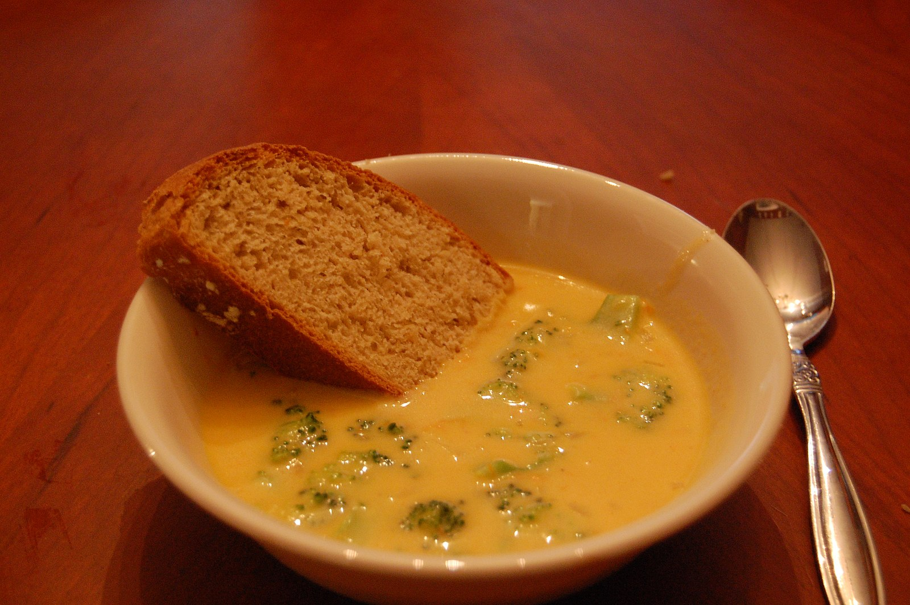

Home
Broccoli Cheddar Soup

Description
Broccoli cheddar soup is one of Jack's favorite foods. Ask him
about the version at Panera Bread, and he'll go on and on about
its creamy texture and rich, tangy, cheesy flavor. He never expected
me to develop a broccoli cheddar soup recipe at home (unless you
count this vegan twist), but with the holidays right around the
corner, I thought it would be fun to surprise him with one.
So, on a gray, chilly day last weekend, when we were both craving
comfort food, I finally made him this broccoli cheddar soup recipe.
As we sat down with our steaming bowls, I waited anxiously to see
what he'd think. I shouldn't have worried. He took one taste and
declared, “This recipe is even better than Panera's broccoli cheddar
soup!” A few minutes later, he was already heading back for seconds.
I hope you love this recipe too!
Ingredients
- 4 tablespoons unsalted butter
- 1 medium yellow onion, chopped
- ½ teaspoon sea salt
- Freshly ground black pepper
- 3 garlic cloves, chopped
- ¼ cup all-purpose flour
- 2 cups whole milk or unsweetened almond milk
- 2 cups vegetable broth
- 3 cups chopped broccoli florets
- 1 large carrot, julienned or finely chopped
- ½ teaspoon Dijon mustard
- 8 ounces shredded cheddar cheese, about 2 heaping cups
- Homemade croutons, for serving, optional
Steps
- Melt the butter in a large pot or Dutch oven over medium heat.
Add the onion, salt, and several grinds of pepper and cook,
stirring, for 5 minutes, or until softened. Stir in the garlic
and cook for another minute, then sprinkle in the flour and whisk
continuously for 1 to 2 minutes, or until the flour turns golden.
Slowly pour in the milk, whisking continuously.
- Add the broth, broccoli, carrot, and mustard and stir to
combine. Simmer for 15 to 20 minutes, or until the broccoli
is tender.
- Gradually add the cheese, stirring after each addition, until
all the cheese is melted and the soup is creamy. Season to
taste and serve with croutons, if desired.